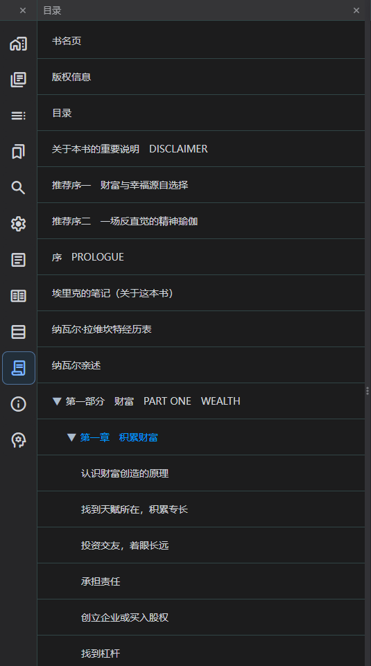
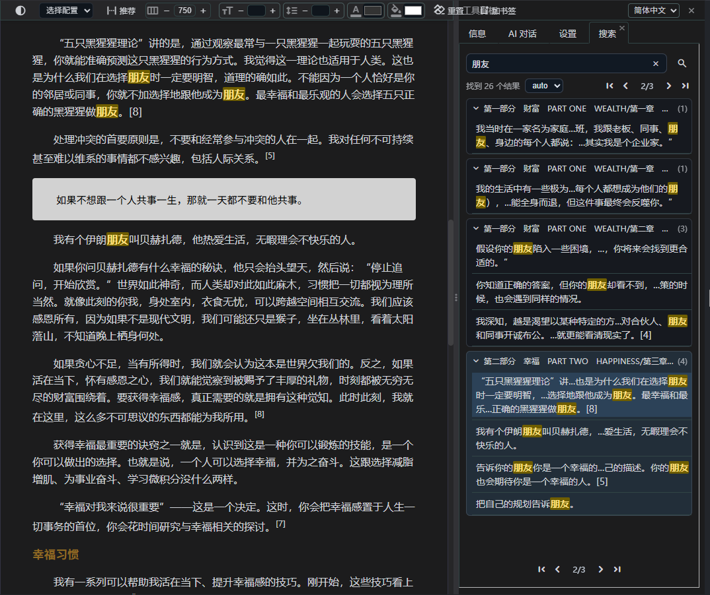

目录与书内搜索
目录用来跳章，搜索用来找具体的一句话。
目录
- 点工具栏的「显示/隐藏目录」，右侧会打开章节列表。
- 点击任意一章，正文会跳到该章开头。
- 再点一次「显示/隐藏目录」可以收起面板。

书内搜索
- 点工具栏的「搜索」，在面板里输入关键词并回车。可以输入多个关键词，用空格分隔，表示「与」关系。
- 结果按章节列出，显示命中的文字片段。
- 点一条结果，跳到对应位置，命中的文字会标出来。

结果分页
结果较多时分页显示。每页显示多少条可以在阅读设置的「面板」分区里调整，默认按面板高度自动适配。